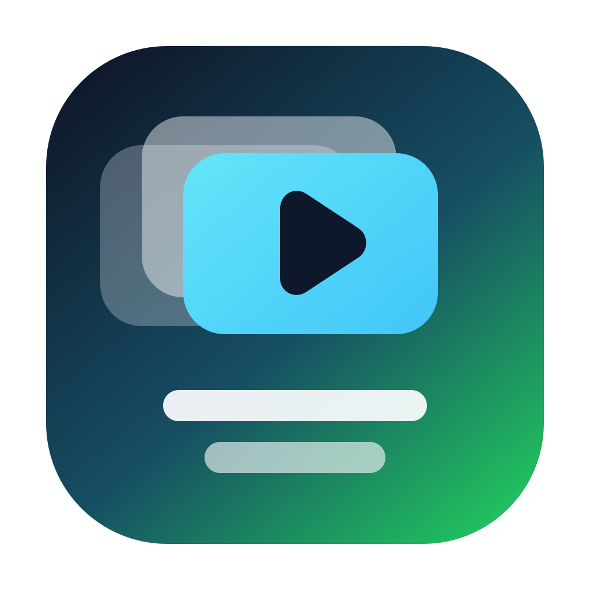
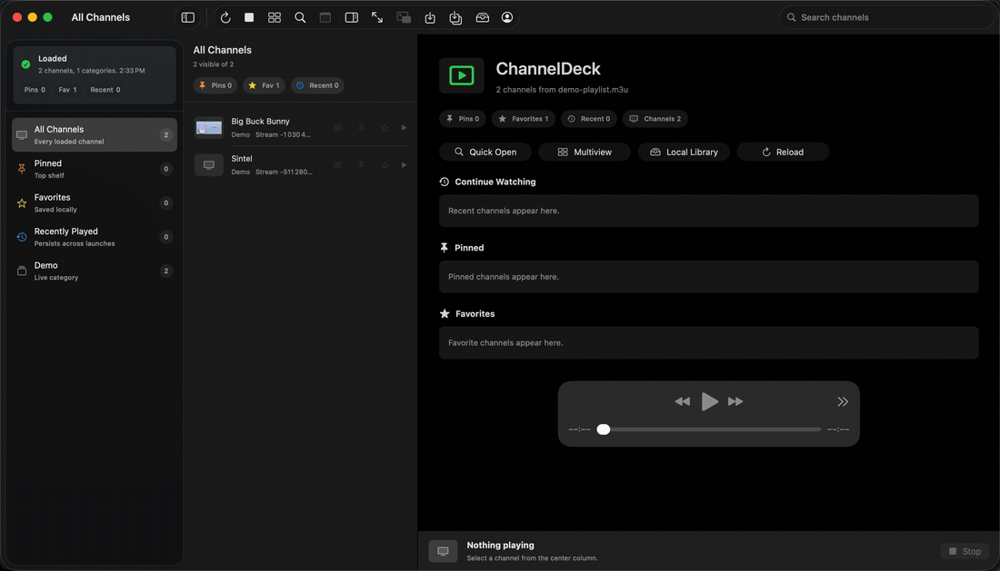

Xtream-style login
Connect with server URL, ID, password, and the provider's player API.

ChannelDeckNative IPTV player for Apple platforms
A focused IPTV player for Xtream-style accounts, with live categories, fast channel browsing, full-screen playback, sample streams, and local credential storage on Apple platforms.
Recorded on macOS

Available now
Connect with server URL, ID, password, and the provider's player API.
Loads live categories and channel lists, with search and category filtering.
Start from pinned, favorite, and recent channel shelves with direct playback actions.
Use Command-K, source filters, and sort controls to find channels quickly.
Save preferred live channels locally and browse them from a dedicated category.
Keep important channels in an ordered top-shelf category that persists locally.
Recently played channels stay available after relaunch and can be cleared.
Fetches short EPG data and opens a richer current-channel guide when the provider exposes it.
Watch two to four channels side by side with per-tile volume and mute controls.
Float the primary live player above other windows while keeping ChannelDeck available.
Record authorized streams locally and browse saved files with search, filters, and sorting.
Open, reveal, refresh, and delete local recordings or saved playlists from one place.
Save a local playlist to the ChannelDeck library for compatible players.
Open authorized local playlists as direct-source live channels.
Try the app with public test streams before adding provider credentials.
Shows player status, stream host, format, and copyable error summaries without credentials.
Browse searchable keyboard shortcuts from inside the app.
Stores passwords in the platform Keychain and keeps public builds credential-free.
Includes an early mobile app target with Home, Browse, Player, Multiview, Settings, Xtream login, and sample playback.
Start on iPhone or iPad from pinned, favorite, and recently played shelves with quick actions.
Pin, favorite, filter, and clear saved mobile channels with state persisted locally.
Show current-channel Now and Next guide data from provider EPG when available.
Record authorized current-channel streams locally on iPhone or iPad.
Browse, search, share, and delete local recordings and saved media.
Watch two to four channels on iPhone or iPad with independent mute and volume per tile.
Regular-width iPad layouts use a split sidebar with navigation, channel counts, and live status.
Import and export local M3U playlists on iPhone and iPad through the Files picker.
Planned
ChannelDeck is a client only. It does not include IPTV subscriptions, provider credentials, private provider playlists, or authorization to access streams. The built-in sample playlist uses public test streams so the interface can be tried without an account. Local recordings and playlist exports are intended only for streams you are authorized to use.